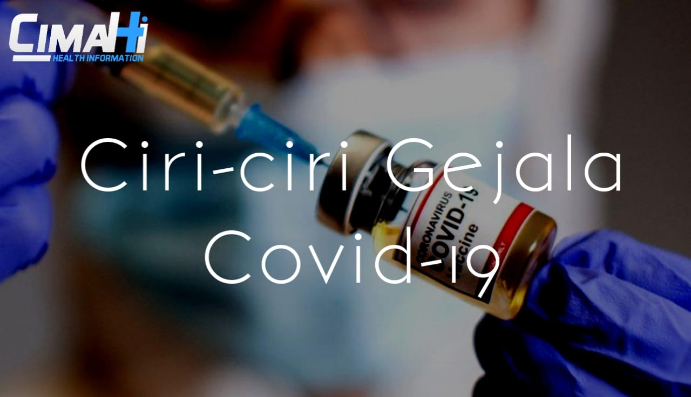

Ciri-ciri Gejala Covid-19
Ditulis oleh Kelompok 4. pada 4 Mei 2021
Lebih mengenal ciri-ciri terinfeksi Virus Corona
Virus ini diperkirakan berasal dari hewan, seperti kelelawar dan unta, dan bisa menular dari hewan ke manusia, serta dari manusia ke manusia. Penularan antarmanusia kemungkinan besar melalui percikan dahak saat batuk atau bersin. Ketika terinfeksi virus Corona, seseorang akan mengalami gejala mirip flu, seperti demam, batuk, dan pilek. Namun, beberapa hari setelahnya, orang yang terserang infeksi virus corona bisa mengalami sesak napas akibat infeksi pada paru-paru (pneumonia). Hingga saat ini, belum ada pengobatan yang dapat menyembuhkan infeksi virus Corona. Oleh sebab itu, Organisasi Kesehatan Dunia (WHO) mengimbau agar masyarakat tidak memandang sepele penyakit ini dan senantiasa melakukan tindakan pencegahan. Salah satunya adalah dengan menerapkan social distancing. Selain itu, kini berbagai penelitian dan uji klinis vaksin COVID-19 juga sedang dilakukan. Vaksin tersebut diharapkan dapat memberikan pencegahan terhadap penyakit COVID-19.
Beberapa ciri-ciri dan dampak dari virus corona ini, di antaranya:
1. Sakit kepala yang berulang-ulang
Dikutip dari Cosmopolitan, Dr Dominic Pimenta yang merupakan ahli jantung dari London mengatakan sebanyak 70 persen pasien COVID-19 mengalami ciri-ciri sakit kepala.
Meskipun bukan termasuk gejala atau ciri-ciri yang khas dari COVID-19, jika sakit kepala terus terjadi berulang-ulang perlu diwaspadai. Bisa jadi itu ciri-ciri atau gejala awal dari COVID-19 dan segera lakukan tes Corona untuk memastikannya.
2. Kadang merasa sesak napas
Berdasarkan studi yang dipublikasi di JAMA, ciri-ciri orang yang terinfeksi Corona bisa mengalami sesak napas. Gejala ini bisa bertahan lama dan mungkin disebabkan karena adanya peradangan yang berlangsung cukup lama di paru-paru.
"Kalau sudah begini, mungkin penyakit yang kamu alami sebelumnya adalah COVID," kata dokter spesialis penyakit menular dari Vanderbilt University School of Medicine Dr William Schaffner, MD.
3. Nyeri dada

Nyeri dada juga bisa menjadi gejala atau ciri-ciri orang terkena virus corona. Hal ini dialami salah satu pasien Corona, Kerrie Noth yang sudah dirawat selama 36 hari.
Ia mengaku sering merasakan seperti terbakar dan muncul rasa kesemutan di area sekitar dada dan lehernya. Selain itu, jantungnya juga sering berdebar-debar hingga muncul rasa tidak nyaman yang cukup ekstrim di bagian dada dan tulang rusuk.
4. Batuk

Dalam penelitian JAMA, sejumlah pasien melaporkan mengalami gejala batuk yang berkepanjangan. Menurut para ahli, ciri-ciri orang terkena virus corona mengalami batuk kering, tidak ada dahak atau lendir.
Berdasarkan data Pusat Pencegahan dan Pengendalian Penyakit (CDC), menunjukkan ada sebanyak 43 persen pasien COVID-19 yang bisa mengalami batuk selama 14-21 hari setelah terinfeksi.
5. Flu Parah

Ciri-ciri seseorang terinfeksi Corona lainnya adalah mengalami flu yang parah. Dalam penelitian dari University of Texas, para ahli menganalisis hasil swab orang yang dicurigai mengalami flu pada musim dingin akhir 2019 di AS.
Hasilnya, ditemukan setiap dua kasus flu di negara tersebut, salah satunya COVID-19. Melihat ini, para ahli yakin COVID-19 mungkin mulai menyebar di AS sejak akhir tahun 2019.
Meski begitu, dokter spesialis penyakit menular dari Vanderbilt University School of Medicine Dr William Schaffner, MD, mengatakan sulit untuk membedakan antara flu dan COVID-19 tanpa melakukan tes. Tetapi, flu biasanya tidak menyebabkan sesak napas, sakit kepala, atau gejala gastrointestinal.
6. Muntah dan diare

Mual, muntah, dan diare juga bisa jadi ciri-ciri orang terkena virus corona. Meski jarang, umumnya pasien yang mengalami ciri-ciri atau gejala ini juga disertai dengan gejala khas COVID-19 lainnya.
Dari pasien COVID-19 yang ada, hanya ada 4 persen yang didiagnosis positif COVID-19 dengan gejala muntah dan diare saja tanpa adanya ciri-ciri seperti demam dan sebagainya.
7. Kelelahan
Ciri-ciri orang terkena virus corona juga diketahui merasa kelelahan yang kronis, tentunya diikuti gejala lainnya. Menurut studi yang dipublikasi di JAMA, gejala ini yang paling bertahan lama setelah seseorang terinfeksi COVID-19.
Mereka menemukan ada sebanyak 53 persen pasien yang mengalami kelelahan selama 60 hari setelah mengalami gejala COVID-19.
8. Mudah Lupa
Salah satu ciri-ciri orang yang terinfeksi virus Corona adalah bisa mudah lupa. Hal ini disebut-sebut berkaitan dengan jangka panjang pasien Corona pasca terpapar, bahkan bisa mengalami depresi, insomnia, parkinson, hingga kehilangan ingatan, demikian dijelaskan Direktur medis NeuroGrow Brain Fitness Center di Virginia Utara dr Majid Fotuhi.
Di sisi lain, pedoman klinis yang diterbitkan The University of Lausanne Hospital di Revue Medicale Suisse menyebut kondisi mudah lupa pada pasien Corona umumnya disertai demam hingga masalah pencernaan, yang menjadi penyebab mudah lupa pada pasien COVID-19 akibat oksigen dalam otak.
9. Sakit Tenggorokan

Meskipun bukan gejala khas COVID-19, sakit tenggorokan juga dialami oleh orang-orang yang terinfeksi virus Corona. Faktanya, ada sebanyak 52,9 persen orang yang terinfeksi bisa mengalami gejala ini.
10. Kehilangan kemampuan indra penciuman dan perasa (anosmia)
Ciri-ciri orang terkena virus corona yang saat ini sering terjadi adalah kehilangan kemampuan indra penciuman dan perasa (anosmia). Pakar penyakit menular Dr Amesh A Adalja, MD, juga mengatakan ciri-ciri ini sangat berkaitan dengan infeksi virus Corona.
Namun, tak sedikit ahli dan bukti yang menyatakan bahwa gejala anosmia ini bisa berlangsung lebih lama hingga berbulan-bulan pasca pasien sembuh dari COVID-19.
-

Hidup Sehat
Berikut Informasi Seputar Hidup Sehat Di Masa Pandemi saat ini.
-

Data kasus
Berikut Informasi Data Angka Kasus Penularan Covid-19 Di Cimahi.